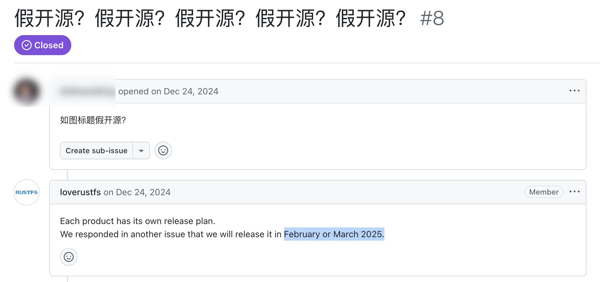
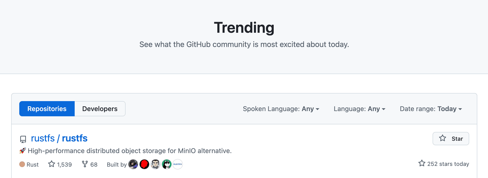
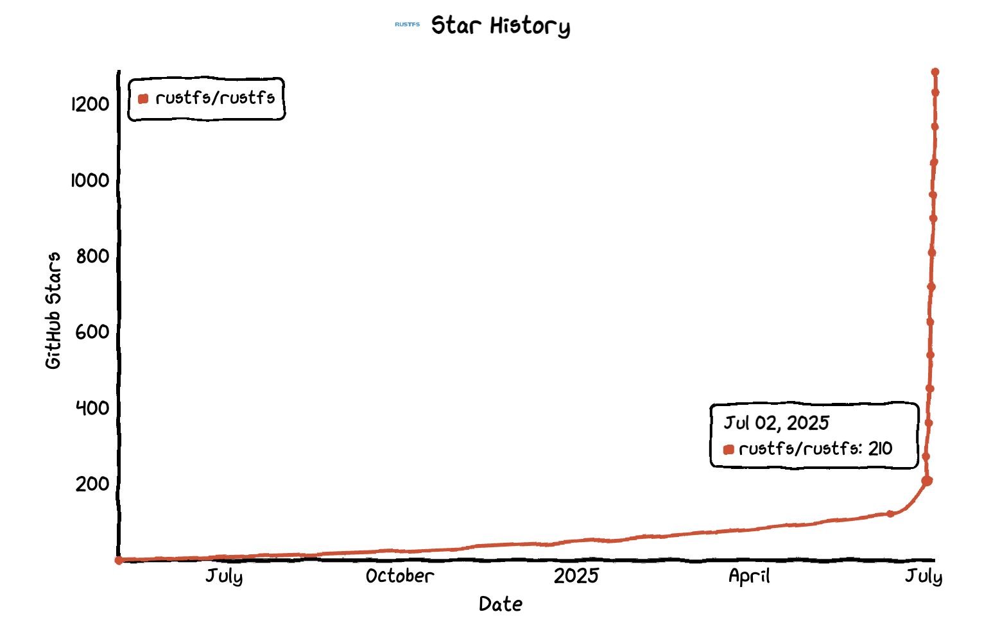
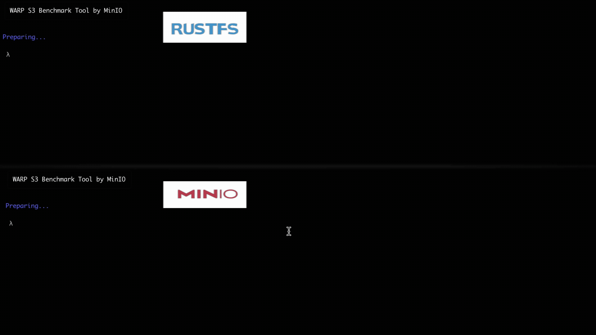
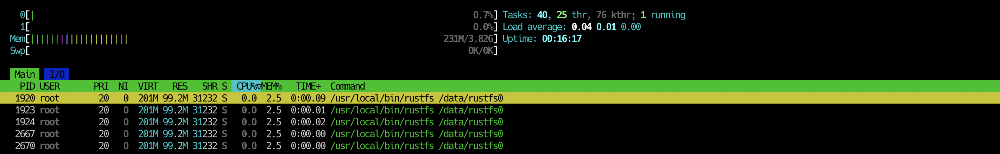
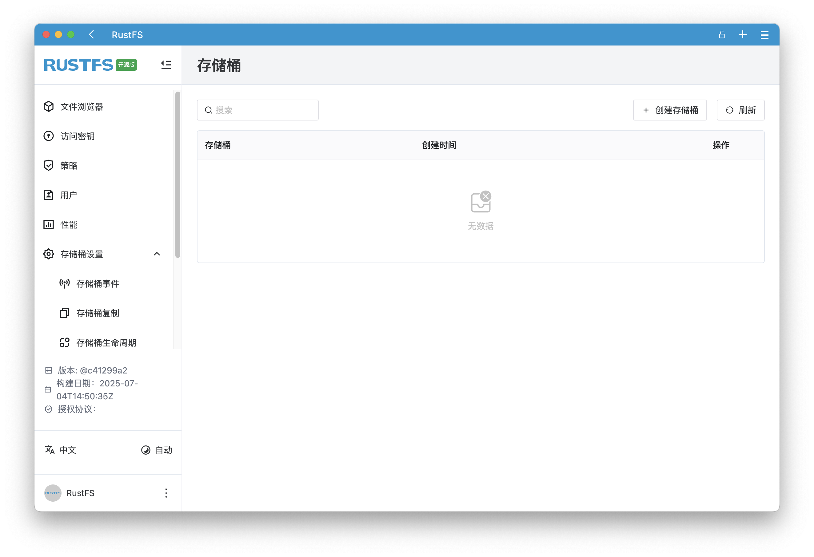
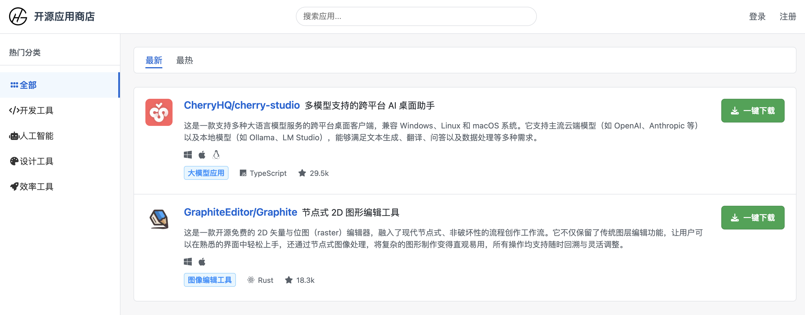
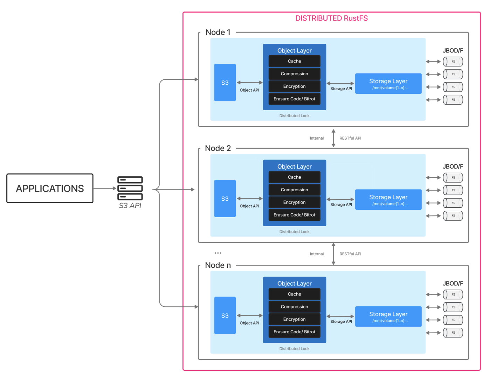
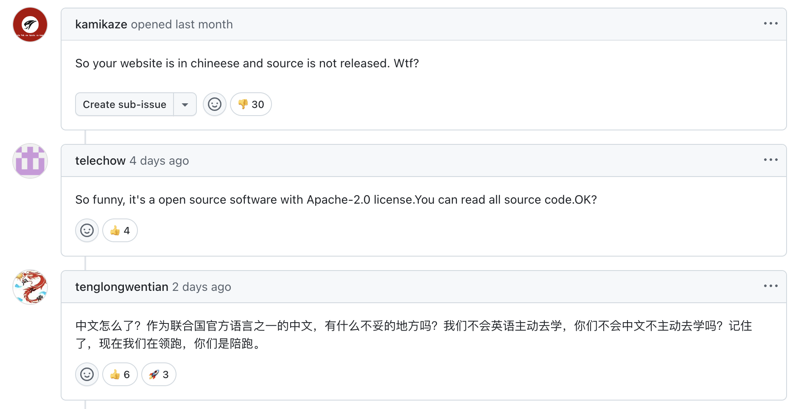

故事的序幕，在 2024 年 1 月的 GitHub 上悄然拉开。
当时，一个名为 RustFS 的开源项目横空出世，号称要做一个基于 Rust 的企业级分布式存储系统，旨在成为 MinIO 的一个开源替代品。这个口号直接把大家吊成了“翘嘴”，但左等右等，结果一年了还只有一份 README 文件，就是不见源码。一时间，开源社区质疑声四起：“假开源”、“PPT 开源”、“光说不练”。

面对压力，RustFS 官方回复说：将在今年的 3 月完全开源，但结果...它再次跳票。这一下，社区里的质疑声几乎达到了顶点。很多人，包括我，都给它默默打上了一个“不靠谱”的标签。

然而，就在七月的第二天（2025.7.2），RustFS “悄悄地”将代码全部开源了！大家还没从“居然真的开源了”的震惊中缓过神，它就像坐火箭一样，短短几天便登顶 GitHub 热榜！

GitHub 地址：github.com/rustfs/rustfs
在如今 AI 开源项目霸榜的环境下，一个与 LLM 毫无关系的开源项目能杀入「全分类热榜」，实属难得！这波操作，是真的把我的下巴都惊掉了。所以，我决定上手体验一番，看看这个曾经的“跳票王”，如今的“榜一大哥”，到底有几分真本事。
一、我用“丐版”服务器把 RustFS 跑起来了！
我寻思着，这种“分布式存储系统”听着就挺高大上，配置要求肯定不低吧？这是我能玩的东西？

抱着“来都来了”的心态，我随手开了一台堪称“丐版”的云服务器（2 核 4G、1M 带宽的 Ubuntu），做好了看它报错的心理准备。结果……整个过程非常顺利。从一台新机器到跑起来只需 3 步：
# 1. 切换到 root 用户，图个方便
sudo -s
# 2. 装个解压工具，因为安装包是 zip 格式
apt install zip
# 3. 下载并运行一键安装脚本
curl -O https://rustfs.com/install_rustfs.sh
bash install_rustfs.sh
终端显示熟悉的 success，它就这么跑起来了！单机可用、资源占用低，看来真不是吹的！
[INFO] RustFS service enabled and started.
RustFS has been installed and started successfully!
Service port: 9000, Data directory: /data/rustfs0

· 服务端口：9000
· 后台管理端口：9001
· 日志位置：/var/logs/rustfs
我立马打开浏览器，访问 http://你的服务器IP:9001/，输入默认的账号密码：rustfsadmin，一个清爽的管理后台就出现在眼前。

二、RustFS 能用来干什么？
对我来说，RustFS 的出现，重新点燃了我内心一个长久以来的想法——创建一个真正开放、纯粹的开源应用商店。

我一直觉得，优秀的开源项目与普通用户之间，隔着一道“最后一公里”的鸿沟。用户不知道去哪找好用的开源应用，开发者也很难将自己的开源作品方便地分发出去。我想打通这一步，让优秀的开源软件能像在手机应用商店里一样，一键下载和安装。这个想法很美好，但现实的第一个耳光很快就扇了过来：存储。
· 方案一：买云存储服务（比如 AWS S3），这是最省事的办法，但也是最烧钱的。对于一个没有商业化的开源项目，每个月几十、几百甚至上千块的存储和 CDN 流量账单，足以扼杀掉我 99% 的想法。
· 方案二：自建存储服务，于是我开始琢磨，能不能自己搭一个？我需要一个这样的系统：
· 便宜、轻量：能跑在我那台“丐版”云服务器上，别一上来就要多高的配置。
· 部署简单：我是来做开源应用商店的，不是来当运维的，最好几行命令就能搞定。
· 可靠且能打：虽然初期规模小，但万一火了呢？它得有扩展的能力，不能到时候再推倒重来。
· 开源可控：技术最好要掌握在自己手里，不能被任何商业公司“绑架”。
而 RustFS 恰好解决了这些痛点。它让我可以用极低的成本，在一台普通的云服务器上自建一个功能强大、兼容 S3 的存储服务。这意味着，我可以先用 RustFS 将想法快速落地，如果有朝一日真的火了，它的分布式架构又能支撑平滑地扩展，从容应对增长。
import boto3
from botocore.client import Config
# 1. 兼容 S3 协议可直接用 boto3 库，连接到 RustFS 服务
s3 = boto3.client(
's3',
endpoint_url='http://IP:9000',
aws_access_key_id='rustfsadmin',
aws_secret_access_key='rustfsadmin',
config=Config(signature_version='s3v4'),
region_name='us-east-1'
)
# 2. 上传文件
def upload_file(local_path, bucket, object_key):
"""将本地文件上传到指定的存储桶。"""
s3.upload_file(local_path, bucket, object_key)
print(f"上传成功: {local_path} -> s3://{bucket}/{object_key}")
# 3. 下载文件
def download_file(bucket, object_key, local_path):
"""从指定的存储桶下载文件到本地。"""
s3.download_file(bucket, object_key, local_path)
print(f"下载成功: s3://{bucket}/{object_key} -> {local_path}")
RustFS 是一个能屈能伸、既能跑在“小破机”上，又能支持企业级应用的文件存储系统，它的底气究竟从何而来？答案，就藏在它的技术架构里。
三、技术架构解析，向 MinIO 致敬
作为 MinIO 的开源平替，RustFS 参考了 MinIO 的简洁、轻量、可扩展、优雅的架构。RustFS 的基本架构是分布式网格，一种使用多个节点执行单个任务的计算机架构。摒弃了传统分布式存储中复杂的主节点、元数据节点、数据节点角色划分，节点通过网络相互连接，这使得它们能够相互通信。

要理解其运作方式，需掌握几个核心概念：
· 对象（Object）：存储的基本对象，如文件、字节流等
· 桶（Bucket）：用来存储对象的逻辑空间。每个桶之间的数据是相互隔离的。对于客户端而言，就相当于一个存放文件的顶层文件夹。
· 硬盘（Drive）：即存储数据的磁盘，在启动时，以参数的方式传入，所有的对象数据都会存储在硬盘里。
· 集合（Set）：即一组硬盘的集合，分布式部署根据集群规模自动划分一个或多个集合，每个集合中的硬盘分布在不同位置。
数据以对象 (Object) 的形式存放在逻辑桶 (Bucket) 中，并最终写入由物理磁盘 (Drive) 组成的工作小组——集合 (Set)。为了高可用，一个 Set 中的磁盘会分布在不同节点上。一个完整的对象，通过纠删码等技术，其数据和校验块会被完整地分布在某一个集合上。整个过程严格遵守 Read-after-write 的强一致性模型，确保了数据的实时与准确。
四、当 MinIO 不再“开放”，RustFS 能否成为更优选择？
近年来，MinIO 的商业化步伐不断加速，其一系列操作从修改开源协议到限制开源版本功能——让许多忠实用户感到不安。曾经那个开放、自由的 MinIO 似乎正渐行渐远，这让业界开始迫切寻找一个更开放、对商业更友好、更纯粹的开源替代方案。
| 时间 | 关键事件 | 补充说明 |
|---|---|---|
| 2021 年 5 月 11 日 | 官方正式宣布，MinIO 服务器项目完全切换到 AGPL v3 许可证。 | MinIO 当天发布官方博客文章《From Open Source to Free and Open Source》宣布此事。 |
| 2022 年 7 月 19 日 | 首次公开指控 Nutanix 违反其开源许可协议。 | MinIO 当天发布博客文章公开指控 Nutanix。 |
| 2023 年 3 月 24 日 | 公开指控并宣布撤销 Weka 的软件使用许可。 | MinIO 当天发布博客文章公开与 Weka 的纠纷。 |
| 2024 年 10 月 | 移除了开源版本 K8s Operator 中的集成控制台。 | 进一步限制其云原生部署工具的免费功能，将 Operator 的便捷管理界面转为商业客户专供。 |
| 2025 年 5 月 | 开源社区版删减了 WebUI 的功能。 | 包含此变更的发行版于 5 月 24 日发布 (RELEASE.2025-05-24T17-08-30Z)。 |
在这样的背景下，RustFS 应运而生。它不仅是一个雄心勃勃的 MinIO 开源平替，更代表了一条坚持自主可控的技术路线。为了更直观地展示 RustFS 的价值，我整理了以下对比表格：
| 特性 | RustFS | 其他主流对象存储 (如 MinIO) |
|---|---|---|
| 控制台体验 | 功能丰富的现代化 Web 后台 | 基础功能控制台（部分高级功能缺失或需付费） |
| 核心技术栈 | Rust 语言开发，内存安全，无 GC 性能开销 | Go 或 C/C++ 开发，存在 GC 停顿或内存泄漏风险 |
| 开源许可证 | Apache-2.0 许可证，对商业使用完全友好，无后顾之忧 | AGPL v3 许可证，存在“代码传染”风险与复杂的法律合规陷阱 |
| S3 兼容性 | 全面兼容 S3 API，并针对国内主流云厂商优化 | 兼容 S3 API，但对国内部分云厂商的私有协议支持可能滞后 |
| 生态与创新 | 基于 Rust 的安全基因，对边缘计算、安全网关等创新设备支持更佳 | 对新兴硬件及安全领域的创新支持相对传统 |
| 商业模式 | 社区版免费，商业版价格透明稳定 | 商业版定价高昂，社区版功能受限 |
| 使用风险 | 纯净的开源项目，无额外风险 | 存在潜在的知识产权纠纷与未来被“禁止使用”的风险 |
诚然，RustFS 目前还处于早期 Alpha 阶段，功能尚不完善、Bug 也在所难免。外界也有不少声音质疑 RustFS 只是“照抄” MinIO。当你选择了一条鲜有人走、充满荆棘的道路，不仅要克服技术难题，也要有直面流言蜚语的心理准备。或许正因为如此，RustFS 在经历了数次“跳票”后，最终决定将 Alpha 版本开源，与大家共同见证它的成长。
五、无视质疑冲上 GitHub 热榜，底气何在？
作为开源新生，RustFS 从第一天起就活在聚光灯下，也活在争议之中：“开源骗子”、“Bug 太多，能用吗？”、“这不就是又一个 MinIO 吗？”

面对这些声音，RustFS 的态度很明确：所有质疑，照单全收，然后用代码来回应。到底是谁，有如此底气和决心，敢于挑战 MinIO 并坚持走自主研发、国产化（存储合规和信创适配）的道路？我顺藤摸瓜找到了他们，RustFS 的核心团队成员均是来自百度、腾讯、好未来等一线互联网公司的资深存储专家和架构师，他们设计和维护过支撑数亿用户的庞大存储系统。
如今，这群人为了同一个目标聚集在 RustFS，致力于打造一个开源、安全可靠、自主可控的世界级对象存储系统。这不仅是项目的初衷，或许也是他们面对所有流言蜚语，仍要坚定走下去的理由。
GitHub 地址：github.com/rustfs/rustfs
最后，RustFS 的开源之路才刚起步，还有许多有待完善的地方。希望大家多一些支持、包容和耐心，让我们共同见证它的成长与蜕变～